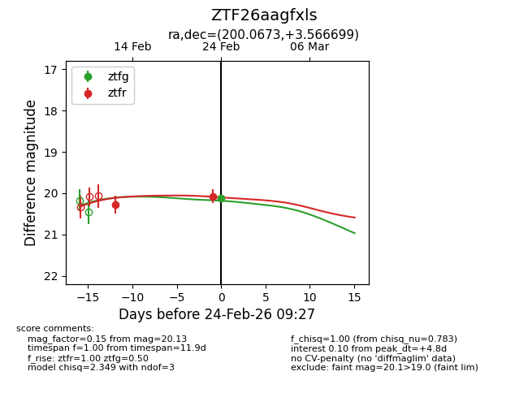
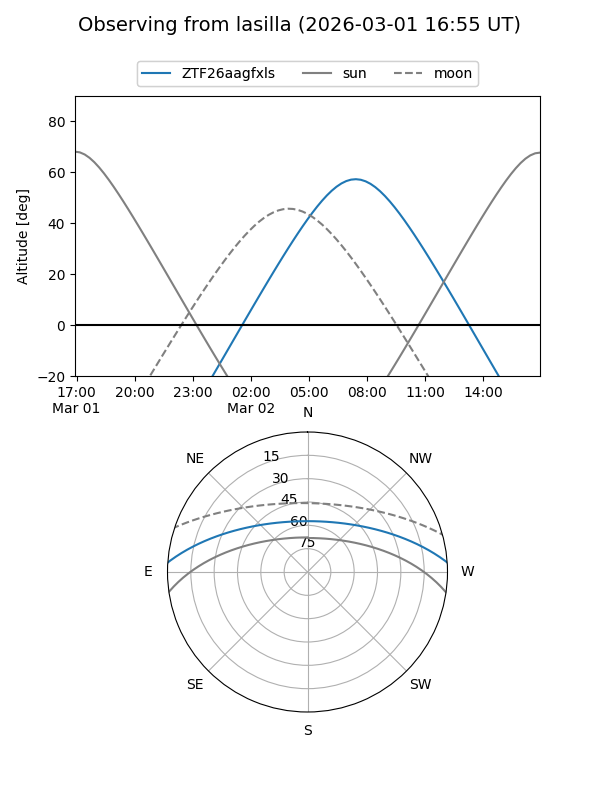
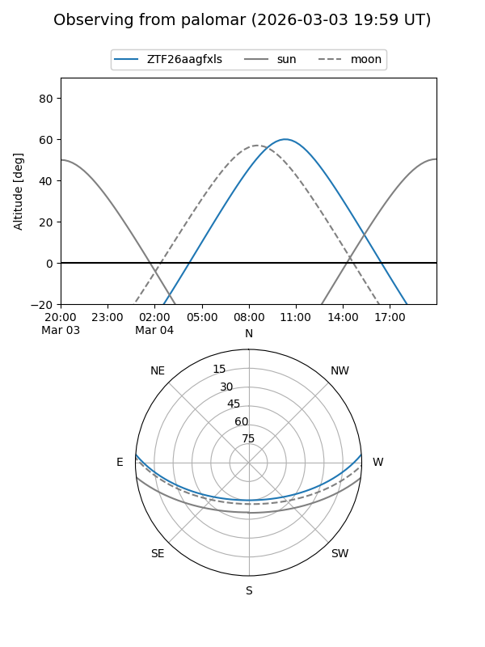
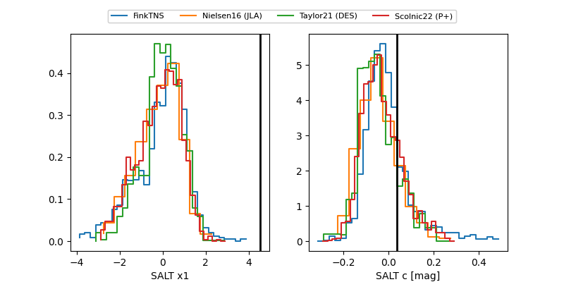

ZTF26aagfxls
Target ZTF26aagfxls at 2026-02-24 09:28
Aliases and brokers:
FINK: link
Lasair: link
ALeRCE: link
alt names
ZTF26aagfxls (ztf,fink_ztf)
Coordinates:
equatorial (ra, dec) = 200.0673,+3.56670
equatorial (HMS+DMS) = 13:20:16.16,+03:34:00.12
galactic (l, b) = (320.4746,+65.45175)
Flags:
Photometry:
last ztfg=20.13, ztfr=20.07
1 ztfg, 2 ztfr detections
Lightcurve

Visibility


Additional plots
